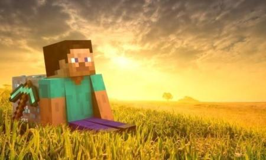
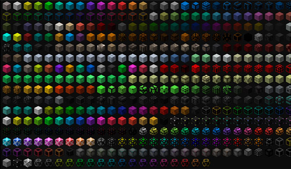
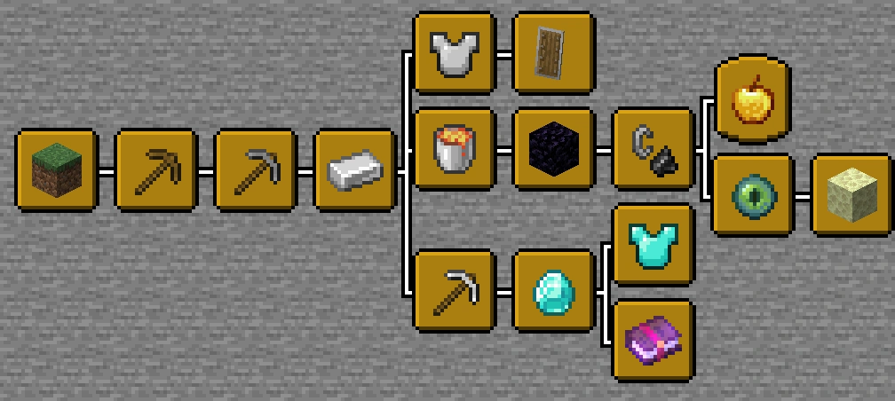
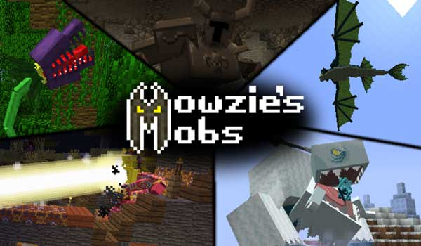
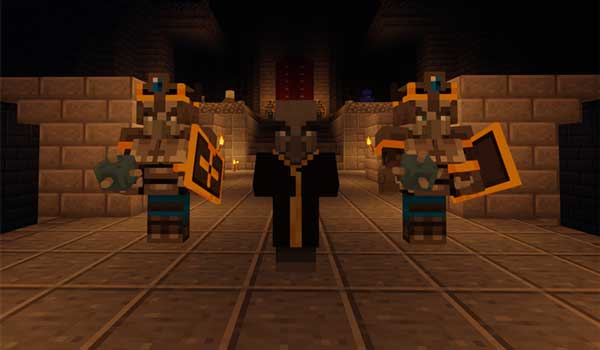

¿QUÉ ES MINECRAFT? UN MUNDO ABIERTO... BASADO EN BLOQUES.
Minecraft llama la atención en el momento en el que lo ves por primera vez.
No sólo sus cifras - oficialmente han vendido 22,4 millones de unidades,
y sólo contando la versión PC/Mac - son impresionantes, también la esencia
del juego llamará la atención. No son gráficos trabajados, al contrario
que la tendencia más habitual de las grandes franquicias del mercado.
En Minecraft todo es pixelado, lo cual le aporta un encanto especial a
la vez que permite ejecutarlo sin problemas en ordenadores que no sean
de la última generación. Puede parecer incluso un juego vetusto, ya oxidado
por el paso del tiempo; la realidad
es que este es su gran encanto. El mundo
de Minecraft es infinito y se basa en bloques, la inmensa mayoría de ellos
con forma de cubo y de las mismas dimensiones. Y sí, decimos bien, infinito,
pues podrías empezar a recorrerlo sin llegar nunca jamás al borde; antes se
agotará el almacenamiento de tu ordenador. Además de infinito es dinámico.
No existen dos mundos iguales, pues cada vez que inicias una nueva partida
se crea un mundo nuevo, diferente del anterior. Aunque tu visión es limitada,
puedes ir caminando por el mundo para ir descubriendo diferentes cosas: poblados
de gente, animales, acontecimientos naturales (volcanes, cuevas, fallas, etc.),
y lo más interesante de todo: deberás ir recogiendo materiales para ir avanzando
en el juego, construyendo nuevos objetos o mejorando los que ya tengas. Uno de los
principales objetivos de Minecraft es precisamente este: ir descubriendo nuevos objetos,
recetas y posibilidades con las que por ejemplo puedes sustituir tu espada de madera
por una de hierro, y luego una de acero. Sólo en el juego original existen cientos de
objetos que puedes - debes - ir descubriendo.

DECENAS DE BLOQUES DSIPONIBLES.
Estos objetos tienen, en la mayoría de ocasiones,
forma de cubo, pues ésta es la unidad más general. Hay objetos
que ocupan varios 'cubos' (por ejemplo una cama) y otros que
tienen formas diferentes, aunque se colocan ocupando el espacio
de un cubo (por ejemplo una antorcha). Y como hemos dicho anteriormente
en el juego original existen cientos de objetos, ya sea en la propia naturaleza
(talas un árbol y obtienes madera; matas a una oveja y tienes lana; picas piedra y obtienes... piedra)
o a través de la combinación de varios de ellos (para hacer una cama necesitarás
diferentes proporciones de madera y lana).

OBJETIVO: CREA LO QUE QUIERAS.
Mencionábamos antes que en Minecraft existen dos
modos de juego: supervivencia y creativo. Y tus objetivos dependerán del
que hayas elegido, claro. El modo supervivencia es el más cercano al videojuego
como tal. En él deberás sobrevivir a los 'enemigos' que aparecen por la noche
(sí, en Minecraft existe el ciclo del día natural, pero proporcionado para que
las 24 horas sean realmente unos pocos minutos). ¿Qué enemigos hay? Por ejemplo los
creepers (en la imagen) son los más conocidos, aunque la lista es bastante amplia y
los hay de varios niveles y con diferentes ataques y habilidades. Afortunadamente
(para los jugadores) existe la opción de 'dormir' por la noche, evitando así el contacto
con los mobs que, recuerdo, actúan sólo en la oscuridad nocturna. Sin embargo, la lógica
nos dice que ara dormir necesitarás una cama, y que ésta deberá estar en un lugar cerrado,
o de lo contrario los mobs te despertarán (y no quieres que un mob te despierte, claro).
¿Cómo empezar a jugar? Hay pequeñas guías que ayudarán a los jugadores novatos a avanzar
durante los primeros momentos del juego. Por ejemplo esta guía de Gamepedia, "tus primeros
diez minutos" en Minecraft, habla sobre los primeros pasos que deberás dar en Minecraft, y
que incluyen desde recolectar madera y alimentos, hacerte tus primeras armas, picar piedra o
construirte tu primer refugio con una cama para descansar. Deberás hacerlo rápido, pues la noche
llegará y tendrás que estar preparado. A medida que vaya pasando el tiempo irás avanzando y mejorando
tu supervivencia. Cada vez te será más difícil encontrar ciertos materiales, y deberás ir creando
tus propias minas para los menos habituales, como Redstone o, sobre todo, diamante. Minecraft, como su
nombre indica, es una combinación entre ir creando minas y picando en ellas para conseguir los
elementos necesarios para mejorar tu equipo y posibilidades. El modo creativo es radicalmente
diferente, si bien la base del juego sigue siendo la misma. Seremos un personaje en un mundo
(también infinito) pero el objetivo es crear todo lo que quieras. Al contrario que en el modo
supervivencia, en creativo el propio juego te da los materiales básicos, haciendo que por ejemplo
puedas conseguir las cantidades de madera que quieras sin talar árboles. Y así con otros muchos materiales.
¡Ah! También te permite volar, algo sin duda imprescindible. En el modo creativo todo se crea de forma
mucho más rápida y cómoda, pues precisamente el objetivo es que tengas a tu disposición la posibilidad
de poner en práctica tus ideas, de que construyas lo que tengas en mente. No necesitarás crear una mina
y picar en ella durante horas para conseguir mil bloques de piedra con los que hacer los muros externos
de un palacio; podrás obtenerlos del propio juego en un instante. A mayores del modo supervivencia y
creatividad tenemos los mods, modificaciones y añadidos sobre el juego original. Hay miles de ellos
disponibles en la red y, de hecho, cualquiera puede crear el suyo propio (y aunque no es fácil, hay
herramientas como MCreator o McModGen que intentan ponerlo al alcance de cualquiera, incluso de
gente que no sepa programar).

CON LOS MODS SE AÑADEN NUEVAS POSIBILIDADES AL JUEGO.
Más, todavía: nuevos objetos, modificaciones en los monstruos o
casi todo lo que imaginemos. Se trata de añadir casi lo que queramos al juego original,
re-programar los aspectos que nos interese tener. Y los hay de todo tipo, incluyendo los
que mejoran el rendimiento del juego en PCs con poca potencia, los que transforman el mundo,
los que facilitan la creación de objetos o los que añaden mapas mejorados. Como decíamos, hay
miles de posibilidades para prácticamente todo lo que tengamos en mente.

REDSTONE, ELECTRÓNICA BÁSICA (Y NO TAN BÁSICA) DE MINECRAFT.
De todos los objetos y posibilidades llama la atención
especialmente la redstone, una 'piedra' especial que permite transmitir energía y,
con ello, crear pequeños inventos de electrónica básica (y no tan básica). En el
modo supervivencia necesitarás picar en una mina a cierta profundidad, encontrando
redstone puntualmente; en el modo creativo la obtendrás directamente del juego. Los usos
son de todo tipo. Hay repetidores, railes para vagones, lámparas
automáticas o mecanismos y sensores, por ejemplo para crear puertas que se
abren automáticamente cuando pisamos sobre un bloque especial... o trampas
por si intentan robarnos (sí, Minecraft puede ser multijugador a través de
Internet y otro usuario podría 'robarnos' nuestro hogar). Si quieres saber más
sobre este material échale un vistazo a la Gamepedia, donde se describen con
profundidad sus posibilidades. Además de pequeños inventos también permite
creaciones infinitas y muchas veces increíbles. Por si no fuera suficiente
con un universo infinito, redstone abre aún más la posibilidades e introduce
la electrónica y la programación a un videojuego.
¿Y TODO ESTO QUÉ TIENE QUE VER CON LA EDUCACIÓN?
Conocíamos la existencia de MinecraftEDU, y la razón
del éxito hasta ahora del juego en el aula. Tras la compra por parte
de Microsoft, la apuesta se eleva aún más con el próximo lanzamiento
en forma de Minecraft: Education Edition. Y aquí me temo que habrá un
cambio importante. Más que crear, el uso de Minecraft en efucación
será usar la herramienta. Al ser un mundo abierto y con posibilidades
infinitas (sobre todo en el modo creación) cualquiera puede hacer una
creación con espíritu formativo y ponerla a disposición de los usuarios
para que estos la descarguen, la usen y aprendan con ella. Por ejemplo,
un paseo por la Antigua Roma que los chavales pueden recorrer para ir
reconociendo los edificios, barrios o muchos otros detalles de la civilización.
MinecraftEDU buscaba esta línea de trabajo que ahora continuará Microsoft con
la edición especial sobre educación. En ella será la comunidad la que cree
los escenarios, para que luego los profesores los usen en el aula junto
con los alumnos. Es cierto que el objetivo de Microsoft es transformar el aula,
haciendo que Minecraft sea una herramienta adicional para afianzar algunos
conocimientos, y que una educación interactiva en la que los chavales juegan
a la vez que aprenden también forme parte de las clases.
 es que este es su gran encanto. El mundo
de Minecraft es infinito y se basa en bloques, la inmensa mayoría de ellos
con forma de cubo y de las mismas dimensiones. Y sí, decimos bien, infinito,
pues podrías empezar a recorrerlo sin llegar nunca jamás al borde; antes se
agotará el almacenamiento de tu ordenador. Además de infinito es dinámico.
No existen dos mundos iguales, pues cada vez que inicias una nueva partida
se crea un mundo nuevo, diferente del anterior. Aunque tu visión es limitada,
puedes ir caminando por el mundo para ir descubriendo diferentes cosas: poblados
de gente, animales, acontecimientos naturales (volcanes, cuevas, fallas, etc.),
y lo más interesante de todo: deberás ir recogiendo materiales para ir avanzando
en el juego, construyendo nuevos objetos o mejorando los que ya tengas. Uno de los
principales objetivos de Minecraft es precisamente este: ir descubriendo nuevos objetos,
recetas y posibilidades con las que por ejemplo puedes sustituir tu espada de madera
por una de hierro, y luego una de acero. Sólo en el juego original existen cientos de
objetos que puedes - debes - ir descubriendo.
es que este es su gran encanto. El mundo
de Minecraft es infinito y se basa en bloques, la inmensa mayoría de ellos
con forma de cubo y de las mismas dimensiones. Y sí, decimos bien, infinito,
pues podrías empezar a recorrerlo sin llegar nunca jamás al borde; antes se
agotará el almacenamiento de tu ordenador. Además de infinito es dinámico.
No existen dos mundos iguales, pues cada vez que inicias una nueva partida
se crea un mundo nuevo, diferente del anterior. Aunque tu visión es limitada,
puedes ir caminando por el mundo para ir descubriendo diferentes cosas: poblados
de gente, animales, acontecimientos naturales (volcanes, cuevas, fallas, etc.),
y lo más interesante de todo: deberás ir recogiendo materiales para ir avanzando
en el juego, construyendo nuevos objetos o mejorando los que ya tengas. Uno de los
principales objetivos de Minecraft es precisamente este: ir descubriendo nuevos objetos,
recetas y posibilidades con las que por ejemplo puedes sustituir tu espada de madera
por una de hierro, y luego una de acero. Sólo en el juego original existen cientos de
objetos que puedes - debes - ir descubriendo.